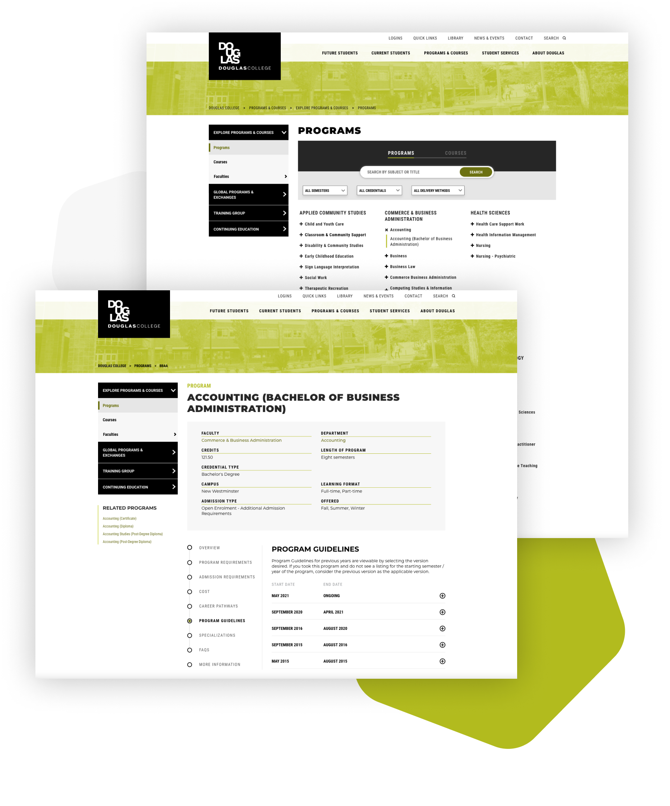

Short description goes here

I have been working as an in-house User Interface/User Experience Designer at Douglas College since March 2020. I perform a variety of functions to support the College’s online digital experiences by working with internal stakeholders and managing projects that require gathering user insights, conducting usability studies, wireframing and creating visual designs based on user experience research.
This particular project focused on improving user experience of the Programs and Courses catalogue. I identified and recruited target users, scheduled and conducted usability testing sessions, analyzed results into actionable findings, explored various solutions based on the findings, and refined designs according to user feedback.
After conducting a survey with faculty members and Enrolment Services, we found out that there are several problematic areas concerning program pages. There is lack of clarity and consistency when it comes to navigating program-related pages, including program and course catalogue, and faculty and department pages.
To define the personas, I analyzed the student body population and summarized the data into two profiles that are representative of the typical students at the College who use Programs and Courses catalogue on a regular basis.
To conduct the remote usability study, I chose Zoom for video conferencing and screen sharing. Before starting the sessions, I asked each participant to sign a consent form. Participants completed a set of tasks on their own devices in their typical environments while sharing their screen and thinking out loud. During the sessions, a member of my team took notes and recorded time on task.
Do participants notice and use filters?
Filters feature on the Programs page wasn’t used by most students (73.3%) as it wasn’t clear or noticeable enough. After showing this feature to students, it was adopted for other tasks and the feedback was positive: “This is brilliant! I don’t know how I never noticed it before” (Participant 2).
Based on the session results, it is obvious that the filter tab needs to be more noticeable. Users will benefit greatly if they use filters as it will help them narrow down their search and find the right offering.
Task
You want to study in the field of Business, and you want to transfer to a university later. Go to the Douglas College website and find an Associate Degree program in Commerce and Business Administration that you can take at Douglas College.
Do participants know which program guideline to check?
The difference between Program Requirements and Program Guidelines tabs is not clear to most students (73.3%) as they failed to choose the right one. Program Requirements tab is the first choice for 66.7% of the participants looking for a Program Guideline.
Those who navigated to the Program Guidelines tab, were confused what Program Guideline to pick, with 40% of all the students believing that they should pick the latest one (i.e. September 2020 in the scenario): “That’s going to be the most updated version from the Ministry of education, I believe” (Participant 9).
Task
You started your Bachelor’s degree in Applied Psychology in Fall 2019 and you need to check your program requirements. Find the correct program guideline.
Do participants see the Related Courses block?
Students do not generally expect to see the Related Courses block on the left side of the page. They tend to look for it in the main tabs first (53%). Only 20% of the participants noticed the Related Courses block right away when completing the task.
33% searched for similar courses in the Requisites > Equivalencies section. Another 33% of the students believe that similar courses are listed nearby the course in question either on the Program Requirements tab or on the list of courses page for that particular department.
Task
You started your Bachelor’s degree in Applied Psychology in Fall 2019 and you need to check your program requirements. Find the correct program guideline.
One of the key catalogue features is the filter bar because it allows users to narrow down their search for the right type of program or course. There are numerous offerings with different types of degrees, and delivery methods in the catalogue. Therefore, user interface design of the filter bar is important for easy navigation.
Original design
As we found out from the usability study, the filter bar was not noticeable enough for most users (73.3%). The original colors of the filter bar were too light and did not grab users attanetion. The dropdown fields had the same light grey background color as the bar itself.
Design 1 and 2
In the first and second design iterations, we explored potential solutions to making the fiters more usable. Design 1 explored splitting filters into two groups: primary and secondary filters. The primary filters were displayed as dropdowns with white background while the secondary filters were hidden in an expandable area and were displayed as radios. This design aimed to reduce the amount of information load that was readily available to users in the filters tab. Design 2 reduced the amount of filters available and displayed the two chosen ones in a form of radio buttons.
Final design
After a careful examination, we refined Design 1 to create a final version of the filters tab. In this version, filters are displayed as dropdowns with a white background and a contrasting border. The overall background color of the filters tab is also darker to further increase the contrast and grab users attention. After the redesign was launched on the website, we used Hotjar to view the heatmaps of the Programs and Courses pages, which revealed that the filters are being used.